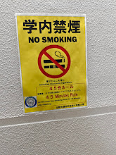
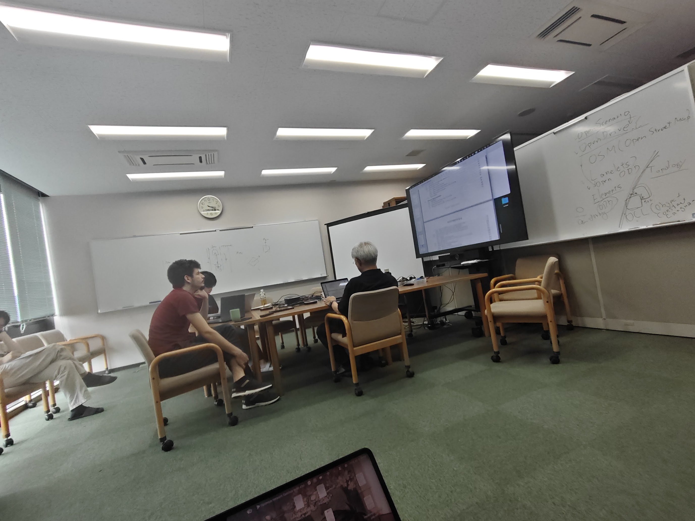
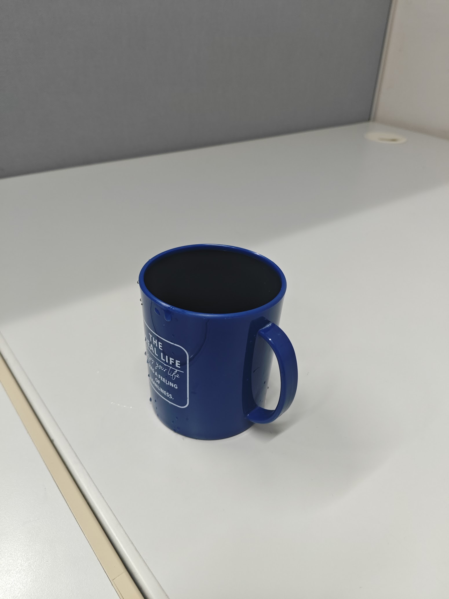
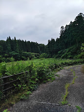
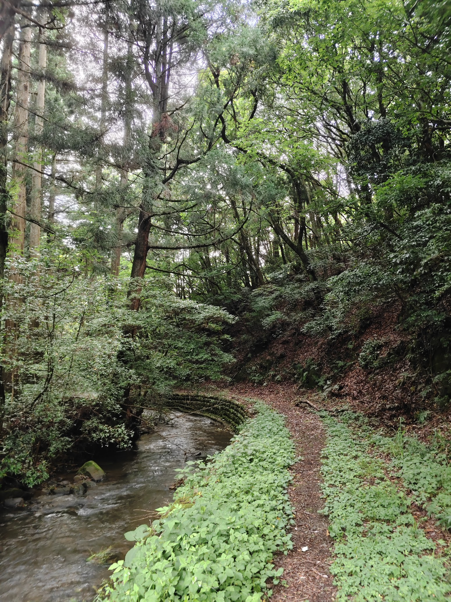

episode 3
life begins
you cannot enter a public place within 45 minutes of smoking. good for them and me. i quit smoking for a month.

life begins. i had to present whatever i had done for the past few months. the lab is very diverse.
people from all over the world - france, japan, india, thailand, vietnam, taiwan.
i forgot to buy a traveller adapter. i had to borrow one from a labmate. i was very lucky to have chill people around. thank you.

another friend gave me his mug because i did not have anything to drink water from.


walked around the campus. there was a waterfall nearby. i went there alone for evening walk.
there were supposed to be twelve waterfalls. i couldn't go deep. it was raining. we had bear warnings. i need to buy a bear bell.
